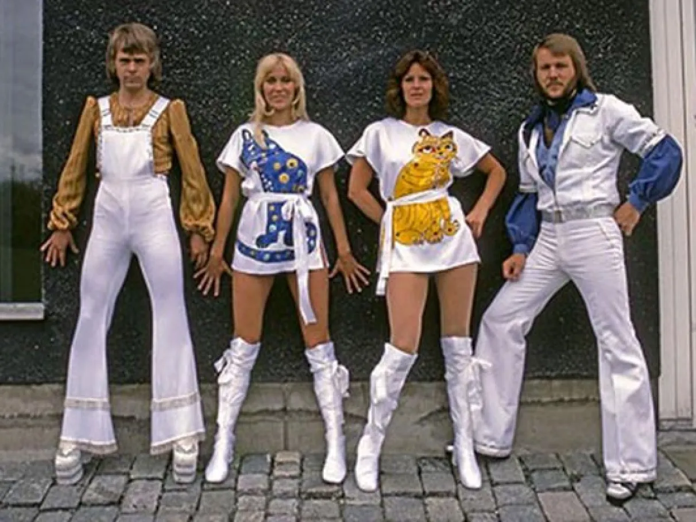

A Revolução Musical
Por: Maria Clara Siqueira Ferreira
Bem vindos a minha fanpage! Aqui você pode conhecer melhor a história deste maravilhoso grupo que revolucionou os anos 70.
O Sucesso Absoluto e o Fim
O grupo sueco ABBA estourou mundialmente após vencer o Festival Eurovision em 1974 com a canção "Waterloo". Formado por dois casais, Agnetha, Björn, Benny e Anni-Frid, eles dominaram as paradas de sucesso com hits atemporais como "Dancing Queen" e "Mamma Mia". No entanto, o desgaste dos relacionamentos amorosos e o divórcio dos integrantes levaram ao fim das atividades do grupo no início dos anos 80, deixando um legado inesquecível na música pop.
Galeria e Vídeos
